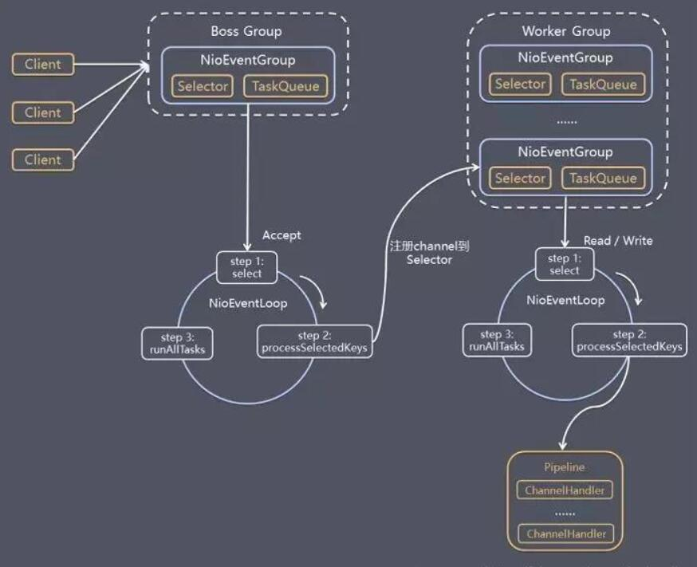
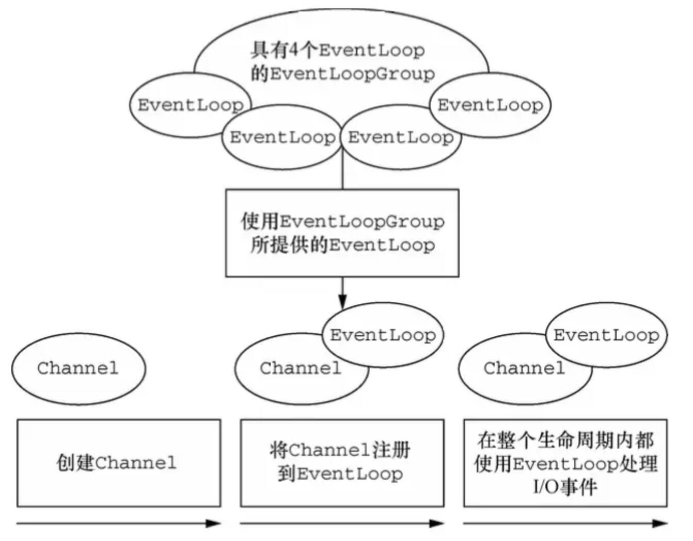
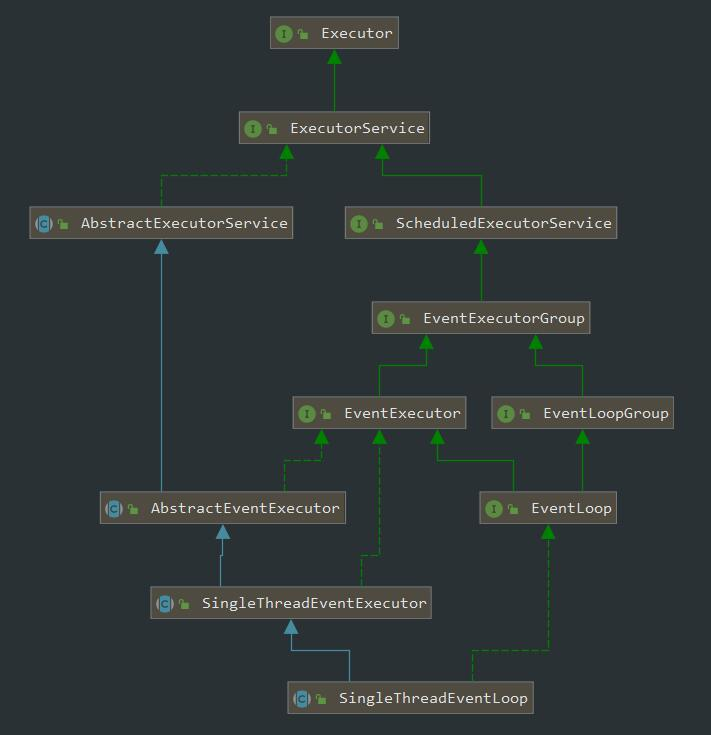
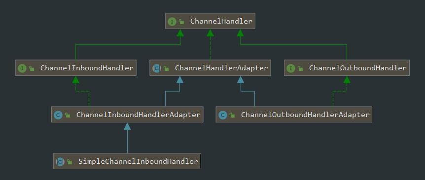

要学Netty，得先从IO模型入手，一点点来。从Unix系统的5个IO模型，JDK的3种IO模型，Reactor模式的3种实现，最后到Netty事件模型的3种实现。
补完课，终于到Netty的IO模型这一章，(╥﹏╥)，这一章主要从大颗粒度的了解下Netty的IO模型，Netty包含的组件，以及用Netty手写一个简单的RPC协议；
Netty

Netty官方的介绍
Netty is a
NIOclient server framework which enables quick and easy development ofnetwork applicationssuch asprotocol servers and clients.
It greatly simplifies and streamlines network programming such asTCP and UDP socket server.
‘Quick and easy’ doesn’t mean that a resulting application will suffer from a maintainability or a performance issue.
Netty has been designed carefully with the experiences earned from the implementation of a lot of protocols such asFTP, SMTP, HTTP, and various binary andtext-based legacy protocols.
As a result, Netty has succeeded to find a way to achieve ease ofdevelopment, performance, stability, and flexibilitywithout a compromise.
关键点：基于NIO实现的客户端-服务端间的网络通信框架，支持多协议，高性能，灵活，稳定，安全，易用；
Netty的IO模型

Netty的io模型是基于Java NIO实现的，参考Reactor模式的主从Reactor多线程版本，思想是分而治之+池化处理；
- Netty抽象出2组reactor线程池：BossGroup专门负责接收客户端的连接，WorkerGroup专门负责网络的读写；
- BossGroup和WorkGroup的类型都是NioEventLoopGroup；
- NioEventLoopGroup相当于一个时间循环组，这个组中含有多个事件循环，每个事件循环是NioEventLoop；
- NioEventLoop表示一个不断循环处理任务的线程，每个NioEventLoop都有一个selector，用于监听绑定在其上的网络通信（Channel）；
- 每个Boss NioEventLoop执行的步骤有3步；
- 轮询accep事件；
- 处理accept事件，与client建立连接，生成NioSocketChannel，并将其注册到worker NioEventLoop上的selector；
- 处理任务队列的任务，即runAllTasks；
- 每个Worker NioEventLoop执行的步骤
- 轮询read,write事件；
- 处理I/O事件，即在对应的NioScoketChannel中处理read、write事件，
- 处理任务队列的任务，即runAllTasks；
- 每个Worker NioEventLoop处理业务时，会使用pipeline(管道)，pipeline中包含了channel，通过pipeline可以获取到对应的通道，另外管道中维护了很多的handler；
Netty的组件
Nettty 有如下几个核心组件：
- Channel：通道，网络操作抽象类；
- EventLoop：事件轮询器，为Channel 处理I/O 操作
- ChannelFuture：I/O异步处理结果对象
- ChannelHandler：事件处理器
- ChannelPipeline：事件处理顺序管理
Channel
Channel 是 Netty 网络操作抽象类，它除了包括基本的 I/O 操作，如 bind、connect、read、write 之外，还包括了 Netty 框架相关的一些功能，如获取该 Channe l的 EventLoop。
相对于原生 NIO 的 Channel，Netty 的 Channel 具有如下优势：
- 在 Channel 接口层，采用
Facade模式进行统一封装，将网络 I/O 操作、网络 I/O 相关联的其他操作封装起来，统一对外提供。 - Channel 接口的定义尽量大而全，为 SocketChannel 和 ServerSocketChannel 提供统一的视图，由不同子类实现不同的功能，公共功能在抽象父类中实现，最大程度地实现功能和接口的
重用。 - 具体实现采用
聚合而非包含的方式，将相关的功能类聚合在 Channel 中，有 Channel 统一负责和调度，功能实现更加灵活。
Channel的产生是为了降低网络传输变成的复杂性，它是传入传出数据的载体，可以打开或者关闭，连接或断开。可以当做它是Socket的升级，大大降低了直接与 Socket进行操作的复杂性。
- EmbeddedChannel：Embedded传输，一般用于测试ChannelHandller
- LocalServerChannel：Local传输，在VM内部通过管道进行通信的本地传输
- NioDatagramChannel：UDP协议NIO传输
- NioSctpChannel：SCTP协议NIO传输(基于Session)
- NioSocketChanne：TCP协议NIO传输，使用Java提供的NIO作为基础，基于选择器的方式（重点）
EventLoop
Netty 基于事件驱动模型，使用不同的事件来通知我们状态的改变或者操作状态的改变。它定义了在整个连接的生命周期里当有事件发生的时候处理的核心抽象。
Channel 为Netty 网络操作抽象类，EventLoop 主要是为Channel 处理I/O 操作，两者配合参与 I/O 操作。
下图是Channel、EventLoop、Thread、EventLoopGroup之间的关系（摘自《Netty In Action》）：

Netty提供的EventLoop结合了JDK的并发编程和Channel的事件，能够帮助用户实现周期性任务调度任务，类层次如下

当一个连接到达时，Netty 就会注册一个 Channel，然后从 EventLoopGroup 中分配一个 EventLoop 绑定到这个Channel上，在该Channel的整个生命周期中都是有这个绑定的 EventLoop 来服务的。
所以有如下约定的关系:
- 一个EventLoopGroup包含一个或多个EventLoop
- 一个EventLoop在其生命周期内只能和一个Thread绑定
- 由EventLoop处理的I/O事件都由它绑定的Thread处理
- 一个Channel在其生命周期内，只能注册于一个EventLoop
- 一个EventLoop可能被分配处理多个Channel。也就是EventLoop与Channel是1:n的关系
- 一个Channel上的所有ChannelHandler的事件由绑定的EventLoop中的I/O线程处理
- 不要阻塞Channel的I/O线程，可能会影响该EventLoop中其他Channel事件处理
ChannelFuture
Netty中所有的I/O操作都是异步的，该异步操作可能无法立即得到返回。
Netty提供addListener()方法注册回调函数ChannelFutureListener，当操作执行成功或者失败时，监听就会自动触发返回结果。
- 可以将ChannelFuture看作是将来要执行的操作的结果占位符，什么时候被执行，不知道。但肯定会被执行
- 属于同一个Channel的操作(回调函数)都被保证将按照注册的顺序执行。
ChannelHandler
ChannelHandler 为 Netty 中最核心的组件，它充当了所有处理入站和出站数据的应用程序逻辑的容器。ChannelHandler 主要用来处理各种事件，这里的事件很广泛，比如可以是连接、数据接收、异常、数据转换等。

ChannelHandler 有两个核心子类：
- ChannelInboundHandler(入站):：处理输入数据和Channel状态类型改变；
- 适配器: ChannelInboundHandlerAdapter（适配器设计模式）
- 常用的: SimpleChannelInboundHandler，继承于ChannelInboundHandlerAdapter，对没有外界引用的资源进行一定的清理
ChannelOutboundHandler(出站): 处理输出数据
- 适配器: ChannelOutboundHandlerAdapter
ChannelHandler的
适配器模式- 为了避免子类需要实现ChannelInboundHandler和ChannelOutboundHandler两个接口中的所有方法，所以设计了ChannelInboundHandlerAdapter和ChannelOutboundHandlerAdapter适配器去实现两个接口，重载它的所有方法；
- 当外部需要自定义Handler时，只需要继承Adapter接口，就无须重载上面2个接口的所有方法了；
ChannelPipeline

- ChannelPipeline类是ChannelHandler实例对象的链表，用于处理或截获Channel的接收和发送数据。它提供了一种高级的截取过滤模式（类似serverlet中的filter功能），让用户可以在ChannelPipeline中完全控制一个事件以及如何处理ChannelHandler与ChannelPipeline的交互；
- 对于每个新的通道Channel，都会创建一个新的ChannelPipeline，并将器pipeline附加到channel中；
- 一个数据或者事件可能会被多个 Handler 处理，在这个过程中，数据或者事件经流 ChannelPipeline，由 ChannelHandler 处理。在这个处理过程中，一个 ChannelHandler 接收数据后处理完成后交给下一个 ChannelHandler，或者什么都不做直接交给下一个 ChannelHandler；
- ChannelPipeline并不是直接管理ChannelHandler，而是通过
ChannelHandlerContext来间接管理；